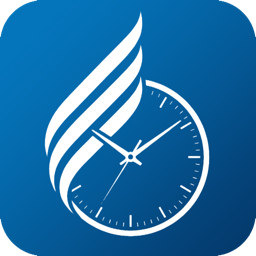

Версія 0.2.8
Звіт пастора
Облік годин служіння на шкалі дня і готовий щомісячний звіт пастора в Excel — у форматі бланка конференції.
Android
APK · 4 МБ · Android 7 і новіші- Завантажте файл на телефоні й відкрийте його.
- Якщо телефон попросить, дозвольте браузеру встановлювати невідомі програми.
- Натисніть Встановити.
Windows
Інсталятор · 3 МБ · Windows 10 і 11- Запустіть завантажений файл.
- Якщо Windows покаже «Windows захистив ваш ПК», натисніть Докладніше → Виконати в будь-якому разі.
- Після встановлення «Звіт пастора» з'явиться в меню «Пуск».
Mac
DMG · 10 МБ · процесори Intel і Apple- Відкрийте файл і перетягніть «Zvit Pastora» у папку Програми.
- Перший запуск: якщо Mac не дає відкрити, зайдіть у Системні параметри → Приватність і безпека → внизу Усе одно відкрити.
- Якщо Mac пише, що програма «пошкоджена», виконайте в Терміналі
xattr -cr "/Applications/Zvit Pastora.app"і запустіть знову.
iPhone та iPad
App StoreСинхронізація між пристроями
Застосунок працює й без входу — записи зберігаються на пристрої. Щоб записи з'являлися на телефоні й комп'ютері, відкрийте Налаштування → Увійти через Google.
Адреси @adventist.in.ua та @adventist.ua підключаються одразу. Якщо у вас інша адреса, після входу подайте заявку — адміністратор її підтвердить.